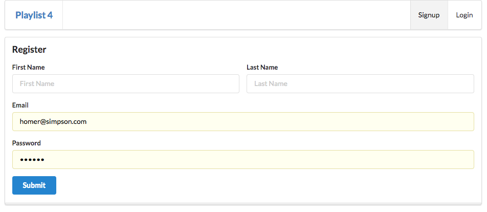
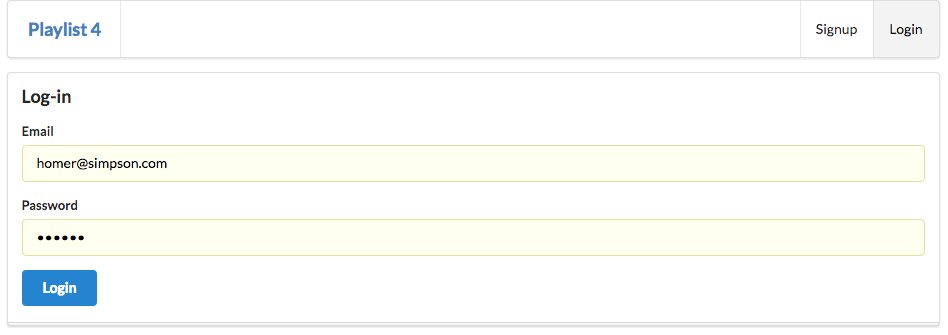

Objectives
Introduce Sessions onto the Playlist application, enabling user accounts and cookie-based authentication.
Playlist Model
This lab is based on Playlist-3. This can be imported into a new gomix project from edeleastar/gomix-playlist-3.
models/playlist-store.js
If your project has any playlists in the json store, delete them now. Your store should look like this:
models/playlist-store.json
{
"playlistCollection": [
]
}We need a new method in the playlist-store module, which will retrieve a playlist based on a specific user id.
models/playlist-store.js
...
getUserPlaylists(userid) {
return this.store.findBy(this.collection, { userid: userid });
},
...This new methods takes a userid, and will only fetch playlists belonging to the user with the specific id. We havent introduced the User model yet - nor are we storing playlists with such an id. We will make these changes in this lab.
Cookie Parser
We need to install a new library in our project - in the form of a library to manage browser based cookies. This requires 2 steps:
Update package.json
package.json
This entry must go in:
"cookie-parser": "^1.4.3",This is the context:
...
"dependencies": {
"body-parser": "^1.15.2",
"cookie-parser": "^1.4.3",
"express": "^4.14.0",
"express-handlebars": "^3.0.0",
"lodash": "^4.17.3",
"lowdb": "^0.14.0",
"uuid": "^3.0.1",
"winston": "^2.3.0"
},
...Load the Library
server.js
In server, we need to import and the initialise the library:
...
const cookieParser = require('cookie-parser');
...
app.use(cookieParser());
...This is the complete server.js
'use strict';
const express = require('express');
const logger = require('./utils/logger');
const bodyParser = require('body-parser');
const cookieParser = require('cookie-parser');
const app = express();
app.use(cookieParser());
const exphbs = require('express-handlebars');
app.use(bodyParser.urlencoded({ extended: false, }));
app.use(express.static('public'));
app.engine('.hbs', exphbs({
extname: '.hbs',
defaultLayout: 'main',
}));
app.set('view engine', '.hbs');
const routes = require('./routes');
app.use('/', routes);
const listener = app.listen(process.env.PORT || 4000, function () {
logger.info(`gomix-template-1 started on port ${listener.address().port}`);
});UserStore
Now we can introduce a new model:
models/user-store.js
'use strict';
const _ = require('lodash');
const JsonStore = require('./json-store');
const userStore = {
store: new JsonStore('./models/user-store.json', {users: []}),
collection: 'users',
getAllUsers() {
return this.store.findAll(this.collection);
},
addUser(user) {
this.store.add(this.collection, user);
},
getUserById(id) {
return this.store.findOneBy(this.collection, { id: id });
},
getUserByEmail(email) {
return this.store.findOneBy(this.collection, { email: email });
},
}
module.exports = userStore;models/user-store.json
{
"users": [
{
"firstName": "homer",
"lastName": "simpson",
"email": "homer@simpson.com",
"password": "secret",
"id": "3ad52697-6d98-4d80-8273-084de55a86c0"
},
{
"firstName": "marge",
"lastName": "simpson",
"email": "marge@simpson.com",
"password": "secret",
"id": "2b6f0989-7b7f-4a38-ad26-aa06b922d751"
}
]
}In the above we are pre-loading two users for test purposes.
Accounts views
We need a suite of new views to support signup / login
views/index.hbs
{{> welcomemenu }}
<section class="ui center aligned middle aligned segment">
<p> Sign up or Log in... </p>
</section>views/login.hbs
{{> welcomemenu id='login' }}
<form class="ui stacked segment form" action="/authenticate" method="POST">
<h3 class="ui header">Log-in</h3>
<div class="field">
<label>Email</label> <input placeholder="Email" name="email">
</div>
<div class="field">
<label>Password</label> <input type="password" name="password">
</div>
<button class="ui blue submit button">Login</button>
</form>views/signup.hbs
{{> welcomemenu id="signup"}}
<form class="ui stacked segment form" action="/register" method="POST">
<h3 class="ui header">Register</h3>
<div class="two fields">
<div class="field">
<label>First Name</label>
<input placeholder="First Name" type="text" name="firstName">
</div>
<div class="field">
<label>Last Name</label>
<input placeholder="Last Name" type="text" name="lastName">
</div>
</div>
<div class="field">
<label>Email</label>
<input placeholder="Email" type="text" name="email">
</div>
<div class="field">
<label>Password</label>
<input type="password" name="password">
</div>
<button class="ui blue submit button">Submit</button>
</form>In addition, a new menu which will support the above views:
views/partials/welcomemenu.hbs
<nav class="ui menu">
<header class="ui header item"> <a href="/"> Playlist 4 </a></header>
<div class="right menu">
<a id="signup" class="item" href="/signup"> Signup </a>
<a id="login" class="item" href="/login"> Login </a>
</div>
</nav>
<script>
$("#{{id}}").addClass("active item");
</script>And finally, we need to extend the menu partial - which will introduce a new menu option to allow a user to log out:
views/partials/menu.hbs
<nav class="ui menu">
<header class="ui header item"> <a href="/"> Playlist 4 </a></header>
<div class="right menu">
<a id="dashboard" class="item" href="/dashboard"> Dashboard </a>
<a id="about" class="item" href="/about"> About </a>
<a id="logout" class="item" href="/logout"> Logout </a>
</div>
</nav>
<script>
$("#{{id}}").addClass("active item");
</script>Accounts controller
This is a new controller to support these views:
controllers/accounts
'use strict';
const userstore = require('../models/user-store');
const logger = require('../utils/logger');
const uuid = require('uuid');
const accounts = {
index(request, response) {
const viewData = {
title: 'Login or Signup',
};
response.render('index', viewData);
},
login(request, response) {
const viewData = {
title: 'Login to the Service',
};
response.render('login', viewData);
},
logout(request, response) {
response.cookie('playlist', '');
response.redirect('/');
},
signup(request, response) {
const viewData = {
title: 'Login to the Service',
};
response.render('signup', viewData);
},
register(request, response) {
const user = request.body;
user.id = uuid();
userstore.addUser(user);
logger.info(`registering ${user.email}`);
response.redirect('/');
},
authenticate(request, response) {
const user = userstore.getUserByEmail(request.body.email);
if (user) {
response.cookie('playlist', user.email);
logger.info(`logging in ${user.email}`);
response.redirect('/dashboard');
} else {
response.redirect('/login');
}
},
getCurrentUser (request) {
const userEmail = request.cookies.playlist;
return userstore.getUserByEmail(userEmail);
}
}
module.exports = accounts;Routes
These new views+ controller all require new routes:
routes.js
In particular, these specific routes:
...
router.get('/', accounts.index);
router.get('/login', accounts.login);
router.get('/signup', accounts.signup);
router.get('/logout', accounts.logout);
router.post('/register', accounts.register);
router.post('/authenticate', accounts.authenticate);
...This is the complete revised routes.js
'use strict';
const express = require('express');
const router = express.Router();
const start = require('./controllers/start');
const dashboard = require('./controllers/dashboard.js');
const playlist = require('./controllers/playlist.js');
const about = require('./controllers/about.js');
const accounts = require ('./controllers/accounts.js');
router.get('/', accounts.index);
router.get('/login', accounts.login);
router.get('/signup', accounts.signup);
router.get('/logout', accounts.logout);
router.post('/register', accounts.register);
router.post('/authenticate', accounts.authenticate);
router.get('/dashboard', dashboard.index);
router.get('/dashboard/deleteplaylist/:id', dashboard.deletePlaylist);
router.post('/dashboard/addplaylist', dashboard.addPlaylist);
router.get('/playlist/:id', playlist.index);
router.get('/playlist/:id/deletesong/:songid', playlist.deleteSong);
router.post('/playlist/:id/addsong', playlist.addSong);
router.get('/about', about.index);
module.exports = router;The application should be running now. You should see these new views:
A new landing page

Signup

login

Dashboard
Try the following now:
- Log in as 'homer@simpson', 'secret'.
- Add a playlist called 'test'.
- logout
- Log in as 'marge@simpson', 'secret'.
Notice that we are seeing Homers test playlist even when we log in as marge? The plaulist-store.json may look loke this:
{
"playlistCollection": [
{
"id": "4a1ea4ec-303e-4b13-bd98-a6b04877e093",
"title": "test",
"songs": []
}
]
}(you may need to make a cosmetic change in the source to get the editor to reload in gomix)
This clearly is not what we were aiming for. We should only present the users own playlists.
Here is how do it - all changes to the dashboard module:
controller/dashboard.js
In the top of the module, import the new accounts module:
...
const accounts = require ('./accounts.js');
...Revised index action:
...
index(request, response) {
logger.info('dashboard rendering');
const loggedInUser = accounts.getCurrentUser(request);
const viewData = {
title: 'Playlist Dashboard',
playlists: playlistStore.getUserPlaylists(loggedInUser.id),
};
logger.info('about to render', playlistStore.getAllPlaylists());
response.render('dashboard', viewData);
},
...Revised addPlaylist action:
...
addPlaylist(request, response) {
const loggedInUser = accounts.getCurrentUser(request);
const newPlayList = {
id: uuid(),
userid: loggedInUser.id,
title: request.body.title,
songs: [],
};
logger.debug('Creating a new Playlist', newPlayList);
playlistStore.addPlaylist(newPlayList);
response.redirect('/dashboard');
},
...Log in as marge and homer in turn, creating a single playlist (use a name you will remember). Make sure that the appropriate playlist appears in each users dashboard.
The Stores
Looking at the playlist-store.json - it might (eventually when loaded) look like this:
{
"playlistCollection": [
{
"id": "4a1ea4ec-303e-4b13-bd98-a6b04877e093",
"title": "test",
"songs": []
},
{
"id": "1e6ed5a0-28fe-4527-8ce8-6cb5c800b5be",
"userid": "2b6f0989-7b7f-4a38-ad26-aa06b922d751",
"title": "marges playlist",
"songs": []
},
{
"id": "07dd66fe-9f8f-456c-944d-48330bde4610",
"userid": "3ad52697-6d98-4d80-8273-084de55a86c0",
"title": "homers playlist",
"songs": []
}
]
}Examine it carefully - notice that the very first playlist is 'orphaned' - it has no userid. The others have userid - which corellates the playlists with the user in the users store:
{
"users": [
{
"firstName": "homer",
"lastName": "simpson",
"email": "homer@simpson.com",
"password": "secret",
"id": "3ad52697-6d98-4d80-8273-084de55a86c0"
},
{
"firstName": "marge",
"lastName": "simpson",
"email": "marge@simpson.com",
"password": "secret",
"id": "2b6f0989-7b7f-4a38-ad26-aa06b922d751"
}
]
}Exercise
This is the completed archive at this stage:
It can be imported into gomix using edeleastar/gomix-playlist-4
Exercise 1
Test the application more comprehensively - signing up a range of users, and creating playlists. Make sure the users only see the playlists they have created.
Exercise 2
Look at the authenticate method again:
authenticate(request, response) {
const user = userstore.getUserByEmail(request.body.email);
if (user) {
response.cookie('playlist', user.email);
logger.info(`logging in ${user.email}`);
response.redirect('/dashboard');
} else {
response.redirect('/login');
}
},Can you see anything not quite right about it?
Hint: what happens if incorrect password entered? Try this now.
See if you can fix this problem - i.e. only allow user to log in if they provide correct password.
Exercise 3
Version 3 of the Gomark assignment can be downloaded from here:
In Gomix, create a new project, and import from github: edeleastar/gomark-3.
Using this lab as a guide - see if you can introduce sessions into gomark?
Exercise 4
You should still have your own gomark assignment. Try this same now - bringing in the sessions feature into your solution.